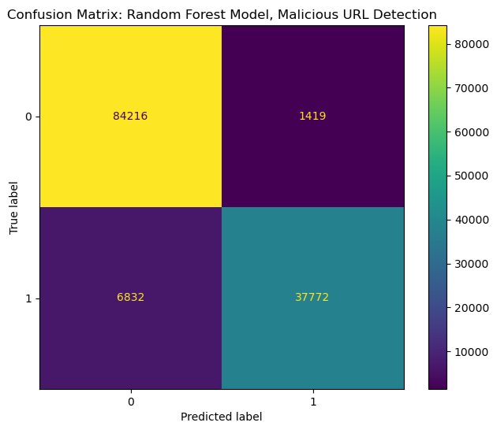
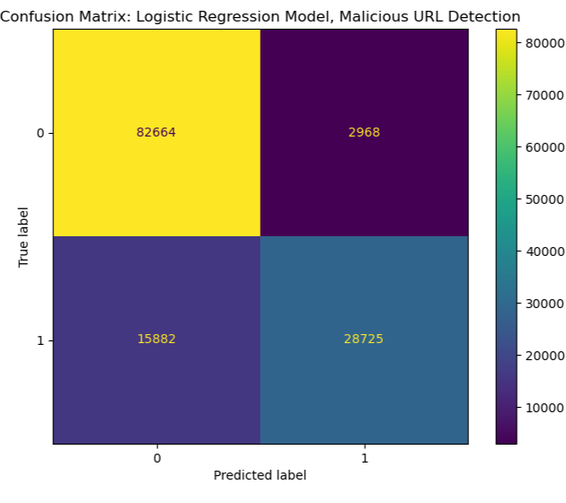
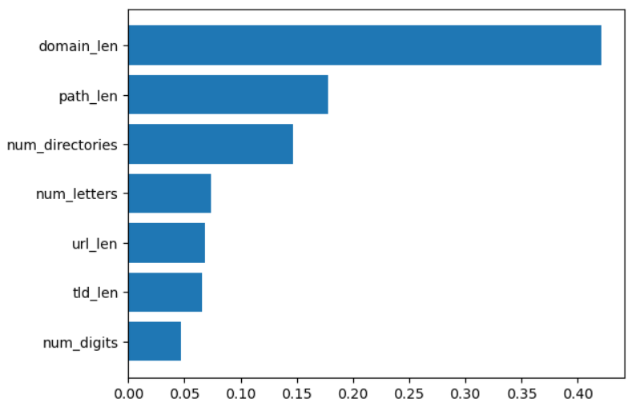
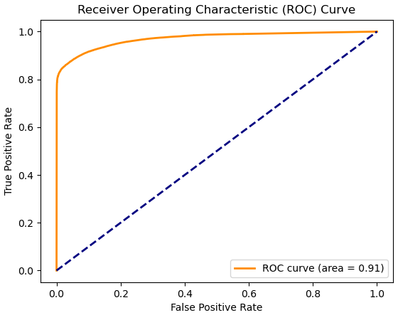
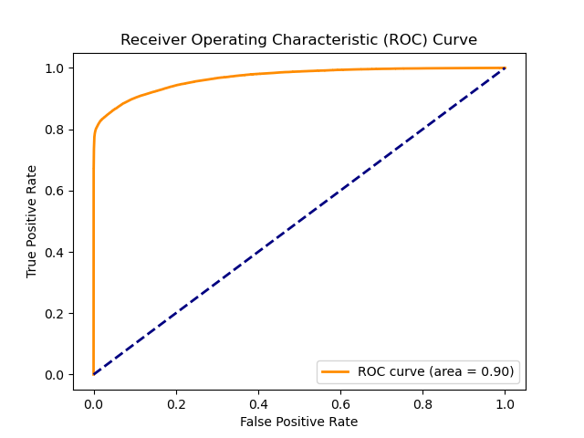

Fall24 Project Proposal (Group 27)
Team Members
Members names ordered in Lexicographically ascending order.
| Member Name | Contact |
|---|---|
| Caden Virant | cvirant6@gatech.edu |
| David Claffey | dclaffey@gatech.edu |
| Nikkolas Glover | nglover53@gatech.edu |
| Oliver Lee | xli3086@gatech.edu |
| Porter Zach | pzach3@gatech.edu |
Introduction & Background
Literature Review
Malicious URL detection is a critical area in cybersecurity, with machine learning playing a pivotal role in enhancing detection capabilities. Abu-Nimeh et al. [1] conducted an early comparative study of machine learning models, including Logistic Regression and Random Forests, to evaluate their performance in detecting phishing emails. This research laid the groundwork for using machine learning in phishing detection. Ma et al. [2] expanded on this by pioneering the use of machine learning models that analyze lexical and host-based features of URLs, outperforming traditional blacklist methods by adapting to new threats more effectively. Le at al. [3] further advanced the field by focusing on lexical patterns within domain names to detect phishing sites in real-time, emphasizing efficiency without heavy reliance on content analysis. In this project, we aim to build on the techniques used in these studies, with the goal of further improving their detection accuracy and performance.
Dataset Description
The dataset is a collection of URLs labeled for malicious intent detection. The specific features of the dataset are as follows:
- Total URLs: 651,191
-
Categories:
-
Benign URLs: 428,103
- Used as a baseline for model training.
-
Defacement URLs: 96,457
- Websites that have been maliciously altered or defaced, often displaying unauthorized content.
-
Phishing URLs: 94,111
- Sites designed to deceive users into revealing sensitive information like login credentials or financial details.
-
Malware URLs: 32,520
- Websites hosting malicious software intended to harm or exploit computer systems.
-
Benign URLs: 428,103
Dataset Link
Link to datasetProblem Definition
Problem
In cybersecurity, there exist multiple methods of scanning website URLs to determine whether they are malicious or benign. Databases like AbuseIPDB, and urlscan.io scan existing URLs and check if they have been reported as malicious by security vendors. A confidence score is assigned to these classifications if they can be categorized. Analysts often face ambiguity with these tools, as new URLs emerge everyday and not every database will have information on whether a site is benign or malicious.
Motivation
This project aims to address this problem by offering another tool for analysts and engineers working to recognize the safety or maliciousness of website URLs quickly and safely. The success of this project would mean designing multiple models with predictive capabilities to effectively distinguish between malicious URLs and benign URLs. Another goal is to distinguish between which URLs are associated with malware and which are associated with phishing, as our dataset is helpfully aggregated into such categories.
Methods
Data Prepocessing
Proprocessing requires traditional NLP methods: noise reduction, tokenization, stopword removal, feature extraction, and dimensionality reduction. At this point, we have implemented several NLP preprocessing techniques:
- Tokenization: We have implemented methods to get the top-level domain, the domain, any subdomains, any schemes, and any subdirectories in the URL.
- Feature Extraction: We have implemented methods allowing us to determine the length of the URL and any subsets of the URL we stated above, get the number of digits vs. letters vs. special characters, and get the frequency of top-level domains.
- Noise Reduction: We have implemented methods from both the urlib and tldextract libraries to decode and unquote the URLs.
ML Algorithms & Models
At this point, we have also implemented three models for classifying the URLs:
- Logistic Regression: We chose to use logistic regression for our first model as it is extremely powerful for binary classification, and as such works well for our benign vs. malicious url classification
- Random Forest: We chose to use random forest as our second model as its repeated discrete choices may provide more insight into the classification and make more intelligent decisions throughout the classification process.
- Multilayer Perceptron (MLP): We chose a multilayer perceptron to test the performance of a fully-connected neural network and various layer architectures.
Results & Discussion
As this is a classification problem, our quantitative metrics all relate to how well the models classify the URLs between malicious and benign. From running both the random forest and logistic regression models, we determined the following quantitative metrics:
- Model Accuracy: 93.57% for Random Forest, 85.62% for Logistic Regression, 94% for Neural Network
- Model Precision: 96.41% for Random Forest, 90.93% for Logistic Regression, 97% for Neural Network
- Model Recall: 84.44% for Random Forest, 64.63% for Logistic Regression, 82% for Neural Network
Both the Random Forest and Neural Network models significantly outperformed logistics regression across all three major quantitative metric. While the accuracy and precision of the Random Forest and Neural Network approaches are comparable, Random Forest holds a slight advantage due to its higher recall.
Examining the confusion matrices (where 1 represents malicious and 0 represents benign), the Random Forest model shows no substantial discrepancies in overclassifying malicious URLs as benign or vice versa. However, the model tends to misclassify malicious URLs as safe more often than it misclassifies safe URLs as malicious. From an ethical standpoint, this is less than ideal, as we would prefer the model to err on the side of caution; that is, overclassifying benign URLs as malicious is preferred than misclassifying malicious URLs as benign.
We tested several neural network architectures, testing increased hidden layers and deeper layers. For the hyperparameter tuning, hidden layers of (5,3), (4,3,3), (10,6), and (64, 32) were tested using the adam gradient descent optimizer and default batch/iteration sizes. Accuracies were all around 91-93% with similar recalls and precision to RF and LR.
The best NN architecture was (64,32) with 94% average accuracy, 91%/97% precision and 99%/82% recall for classes 0 and 1 respectively. As the model gets larger, accuracies became marginally better, however the time complexity of training and inference for the network was worse than random forest. Because the data is highly tabulated due to our data preprocessing scripts, it makes sense that a lower complexity Random Forest model could outperform the neural network.  Next, we looked at which parameters passed into the models were most important in terms of decision-making. As we can see from the chart below, the most important feature by far was the domain length at more than 40% importance, followed by path length and number of directories at about 15-20% importance, with the rest of the passed parameters holding between 5-10% importance.
Lastly, we generated ROC curves for the random forest, logistic regression, and neural network models. The random forest curve, seen below, gave us an Area Under the Curve (AUC) of 0.91. This showed us that the model is well suited for detecting malicious URLs in terms of balancing TP and FN rates.
The neural network achieved an ROC area of .90, slightly worse than the random forest model.
Given the time complexity of the neural network for only marginal improvements on accuracy and a lower ROC area suggests logistic regression is the best model that we trained. It could be improved by performing a parameter sweep to find optimal parameters such as max tree depth and number of estimators.
Ethical Considerations
As aforementioned, there are ethical considerations to be had given the model is more prone to classifying safe emails as malicious rather than the opposite. This behavior could improve convenience for the user, as the model is less likely to flag safe emails. However, if users rely too heavily on model detection, and malicious emails evade detection, this could lead to data breaches, financial loss, and loss of property. In general, this model would likely improve the situation of malicious URLs at a small cost of user convenience for misclassifications, but it is important to consider how increased trust in malicious URL detection would affect users propensity to click on URLs that pass detection.
Timeline
Gantt Chart
Link to Gantt ChartMember Contributions
Proposal Contributions
| Name | Proposal Contributions |
|---|---|
| Caden Virant | Potential Results and Discussion |
| David Claffey | Background Research, References |
| Nikkolas Glover | Problem Definition |
| Oliver Lee | Introduction and Background, Methods, Github Page |
| Porter Zach | Introduction and Background, Methods |
Midterm Contributions
| Name | Midterm Contributions |
|---|---|
| Caden Virant | Written Report and Data Preprocessing |
| David Claffey | Random Forest Model Code and Database Exploration |
| Nikkolas Glover | Logistic Regression Model Code, Data Preprocessing Code, Data Visualization (Confusion Matrices) |
| Oliver Lee | Data Preprocessing Functions and Website Update |
| Porter Zach | Logistic Regression and Random Forest Model Functionality and Evaluation |
Final Contributions
| Name | Final Contributions |
|---|---|
| Caden Virant | Written Report and Methods |
| David Claffey | Written Report and Results |
| Nikkolas Glover | Final presentation and video |
| Oliver Lee | Webpage, Written Report and Results |
| Porter Zach | MLP Model Code and Data Visualization |
References
[1] S. Abu-Nimeh, D. Nappa, X. Wang, and S. Nair, "A comparison of machine learning techniques for phishing detection," in Proc. Anti-Phishing Working Groups 2nd Annual eCrime Researchers Summit (eCrime '07), New York, NY, USA, 2007, pp. 60-69. doi: 10.1145/1299015.1299021.
[2] J. Ma, L. K. Saul, S. Savage, and G. M. Voelker, "Beyond blacklists: learning to detect malicious web sites from suspicious URLs," in Proc. 15th ACM SIGKDD Int. Conf. Knowledge Discovery and Data Mining (KDD '09), New York, NY, USA, 2009, pp. 1245-1254. doi: 10.1145/1557019.1557153.
[3] A. Le, A. Markopoulou, and M. Faloutsos, "PhishDef: URL names say it all," in Proc. 2011 IEEE INFOCOM, Apr. 2011, pp. 191-195. doi: 10.1109/INFCOM.2011.5934995.